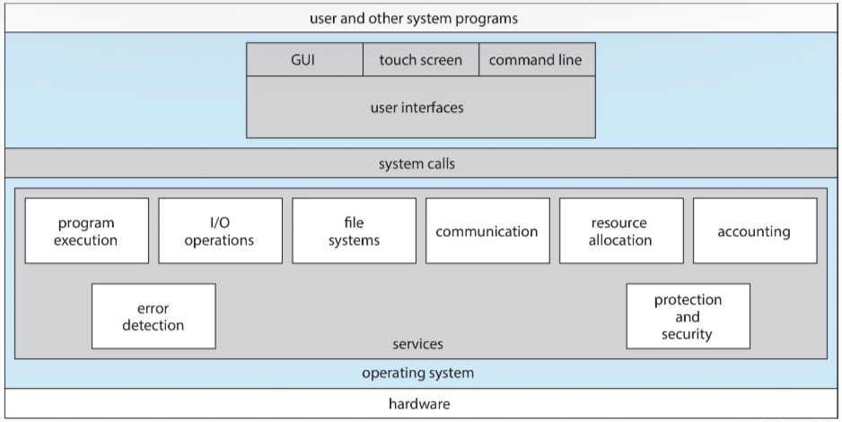
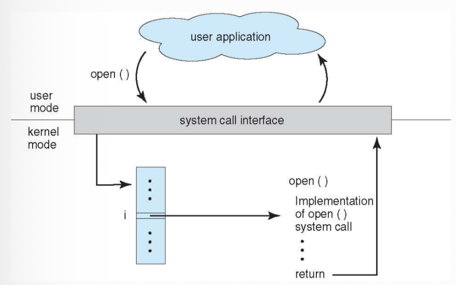
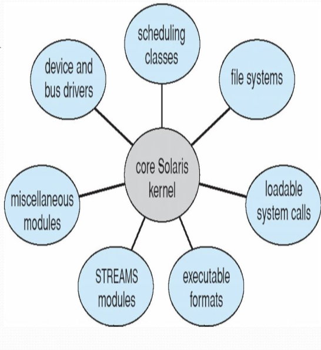
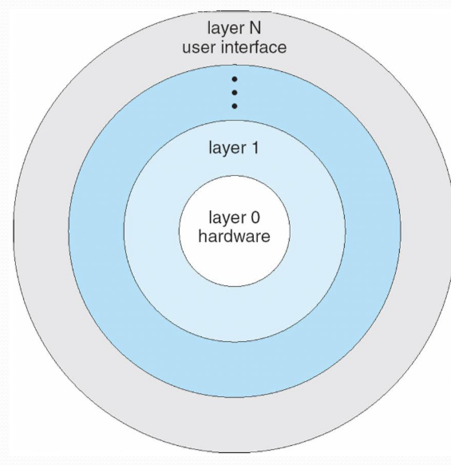
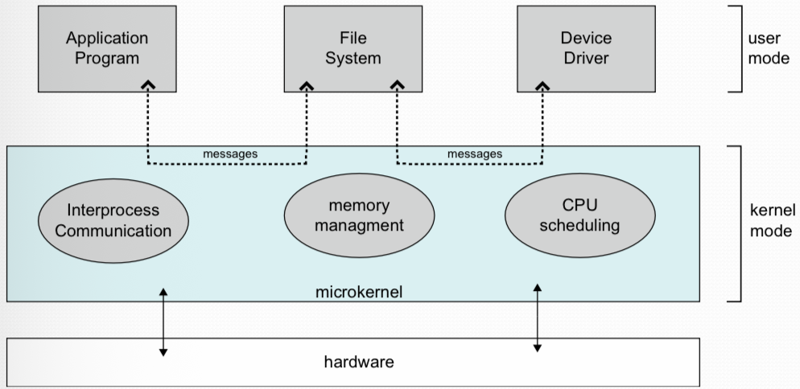

CS330 - أنظمة التشغيل
فهم خدمات نظام التشغيل، الواجهات، والهيكلة
أنظمة التشغيل توفر بيئة لتنفيذ البرامج وخدمات للبرامج والمستخدمين. الخدمات تنقسم إلى تلك المفيدة لـ المستخدم وتلك التي تضمن تشغيلًا فعالًا لـ النظام.
تقريبًا كل أنظمة التشغيل لها واجهة مستخدم. تختلف بين واجهة أوامر نصية (CLI)، واجهة رسومية (GUI)، أو كلاهما.
قدرة النظام على تحميل برنامج في الذاكرة وتشغيله. نظام التشغيل يقدر ينهي التنفيذ إما طبيعيًا أو غير طبيعي.
بما أن برامج المستخدم لا تستطيع تنفيذ عمليات الإدخال/الإخراج مباشرة، نظام التشغيل يجب أن يوفر وسائل لأدائها.
القدرة على قراءة، كتابة، إنشاء، فتح، إغلاق وحذف الملفات والمجلدات.
تبادل المعلومات بين العمليات على نفس الجهاز أو أنظمة مختلفة عبر الذاكرة المشتركة أو تمرير الرسائل.
ضمان الحوسبة الصحيحة باكتشاف الأخطاء في المعالج، ذاكرة العتاد، أجهزة الإدخال/الإخراج، أو برامج المستخدم.

يظهر العلاقة بين المستخدم، خدمات نظام التشغيل، والنظام
| الخاصية | CLI | GUI |
|---|---|---|
| السرعة | أسرع للمستخدمين الخبراء | أبطأ لكن أكثر بديهية |
| استخدام الموارد | استخدام قليل للذاكرة/المعالج | متطلبات موارد أعلى |
| منحنى التعلم | حاد - يحتاج حفظ الأوامر | لطيف - مرئي وبديهي |
| الأتمتة | سهل كتابة سكربتات وأتمتة | أصعب لأتمتة المهام |
| الدقة | تحكم دقيق جدًا | أقل دقة، أكثر عمومية |
استدعاءات النظام توفر واجهة بين البرنامج الجاري ونظام التشغيل. عادةً تكون متاحة كتعليمات لغة تجميع ويتم الوصول إليها عبر API في اللغات العالية.

يظهر الانتقال من وضع المستخدم إلى وضع النواة
| الفئة | الوظائف | أمثلة |
|---|---|---|
| التحكم في العمليات | إنهاء، إجهاض، تحميل، تنفيذ، إنهاء/إنشاء عملية، جلب/تعيين سمات، انتظار | fork(), exit(), wait(), exec() |
| إدارة الملفات | إنشاء، حذف، فتح، إغلاق، قراءة، كتابة، إعادة تموضع، جلب/تعيين سمات | open(), close(), read(), write(), lseek() |
| إدارة الأجهزة | طلب/تحرير جهاز، قراءة، كتابة، إعادة تموضع، جلب/تعيين سمات | ioctl(), read(), write() |
| صيانة المعلومات | جلب/تعيين الوقت أو التاريخ، جلب/تعيين بيانات النظام، جلب/تعيين سمات العملية | getpid(), alarm(), sleep() |
| الاتصالات | إنشاء/حذف اتصال، إرسال/استقبال رسائل، نقل الحالة | pipe(), shmget(), socket() |
| الحماية | جلب/تعيين الصلاحيات، السماح/منع الوصول | chmod(), umask(), chown() |
التشغيل ثنائي الوضع يخلّي نظام التشغيل يحمي نفسه والمكونات الأخرى. العتاد يوفر mode bit للتفريق بين تنفيذ كود المستخدم وكود النواة.
س: ماذا يحدث عندما يحاول برنامج مستخدم تنفيذ تعليمة مميزة في وضع المستخدم؟
نظام التشغيل للأغراض العامة هو برنامج كبير جدًا. هناك طرق متعددة لهيكلة أنظمة التشغيل، لكل منها مزايا وعيوب.
مثال: MS-DOS, UNIX الأصلي

هيكلة نظام تشغيل معيارية بوحدات قابلة للتحميل
معظم أنظمة التشغيل الحديثة ليست نموذجًا نقيًا واحدًا بل تجمع بين عدة طرق:
| الهيكلة | المزايا | العيوب | أمثلة |
|---|---|---|---|
| بسيطة/أحادية النواة | سريعة، فعالة | صعبة الصيانة، غير آمنة | MS-DOS, UNIX المبكر |
| طبقية | معيارية، سهلة التصحيح | عبء أداء، صعوبة تعريف الطبقات | THE, OS/2 |
| نواة مصغرة | موثوقة، آمنة، قابلة للنقل | عبء أداء من تمرير الرسائل | Mach, QNX, Minix |
| معيارية | مرنة، فعالة، قابلة للصيانة | تعقيد في واجهات الوحدات | لينكس، Solaris، ويندوز |
برامج النظام توفر بيئة مناسبة لتطوير وتنفيذ البرامج. يمكن تقسيمها لعدة فئات.
إنشاء، حذف، نسخ، إعادة تسمية، طباعة، تفريغ، عرض الملفات والمجلدات
التاريخ، الوقت، استخدام الذاكرة، مساحة القرص، عدد المستخدمين، الأداء
محررات نصوص لإنشاء وتعديل الملفات، البحث في المحتويات
مترجمات، مُجمّعات، مصححات، مفسرات
لوادر، روابط، أدوات تنفيذ
بريد إلكتروني، متصفحات ويب، دخول عن بُعد، نقل ملفات
عملية بدء تشغيل الكمبيوتر بتحميل النواة تُعرف باسم الإقلاع.
س١. أي من التالي ليس فائدة لهيكلة النواة المصغرة؟
س٢. في هيكلة نظام التشغيل الطبقية، كل طبقة يمكنها استخدام خدمات:
س٣. أي فئة من استدعاءات النظام ينتمي إليها chmod()؟
س٤. عندما يقوم برنامج مستخدم باستدعاء نظام، فإن mode bit يتغير من:
س٥. أي من التالي اخترع في Xerox PARC؟
س٦. اشرح الفرق بين وضع المستخدم ووضع النواة. لماذا هذا التمييز مهم؟ (٥ درجات)
س٧. قارن بين هيكلة النواة الأحادية والنواة المصغرة. اذكر ميزة وعيب لكل منهما. (٨ درجات)
| الخاصية | نواة أحادية | نواة مصغرة |
|---|---|---|
| الهيكلة | كل خدمات نظام التشغيل في مساحة النواة | نواة بسيطة، خدمات في مساحة المستخدم |
| الميزة | أداء سريع (لا تمرير رسائل) | أكثر موثوقية وأمانًا |
| العيب | صعبة الصيانة، أقل أمانًا | عبء أداء من الاتصال بين العمليات |
| مثال | لينكس، يونكس | Mach, QNX |
س٨. اذكر وصف بإيجاز خمسة أنواع من استدعاءات النظام مع مثال لكل منها. (١٠ درجات)
| المصطلح | التعريف |
|---|---|
| استدعاء النظام | واجهة بين البرنامج الجاري ونواة نظام التشغيل |
| API | واجهة برمجة التطبيقات - مجموعة وظائف متاحة للمبرمجين |
| القشرة (Shell) | مفسر أوامر يوفر واجهة مستخدم لنظام التشغيل |
| وحدة نواة | مكون نواة قابل للتحميل يوسع وظائف نظام التشغيل |
| Mode Bit | بت عتادي يفرق بين وضع المستخدم (١) ووضع النواة (٠) |
| تعليمة مميزة | تعليمة معالج يمكن تنفيذها فقط في وضع النواة |
| محمل الإقلاع | برنامج يحمل نواة نظام التشغيل أثناء إقلاع النظام |
| IPC | اتصال بين العمليات - تمرير الرسائل بين العمليات |
| برنامج نظام | برنامج يوفر بيئة لتطوير/تنفيذ البرامج |

